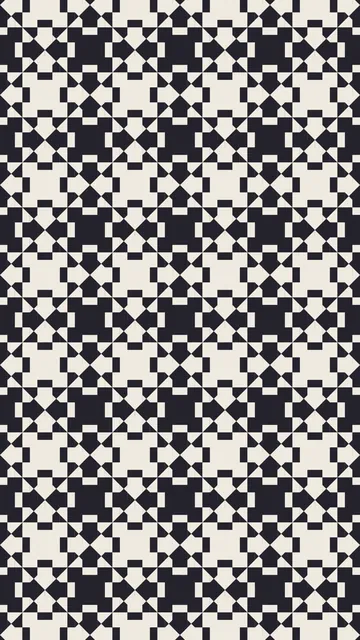
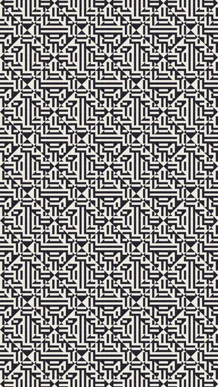
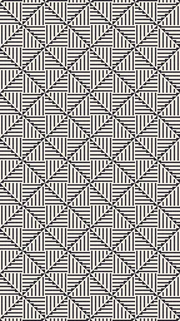
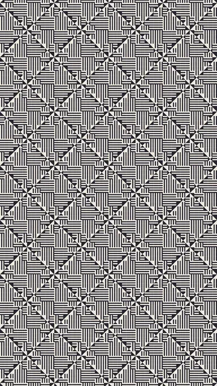

Collection P

Other languages: Français · Español · ไทย · 简体中文 · Русский · Português · हिन्दी
Group 1 of 6 · 4 animations
The plain ground, and bands of equal width: two, three or four. Nothing loads before a click, and only one animation plays at a time. You can preview each animation at another speed or in other colours.



